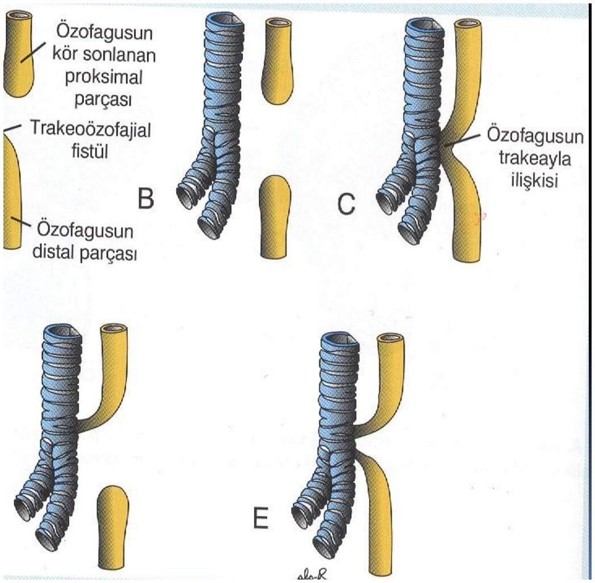

Bölüm 5 · Embryologia systematis respiratorii
Bu bölümden gelen soruların neredeyse hepsi akciğer gelişiminin dönemlerini sorar. Asıl soru, hangi yapının ilk kez hangi dönemde göründüğüdür: respiratuar bronşiyoller kanaliküler dönemde, alveoller terminal kese ve alveolar dönemlerde. Bir soru da akciğer gelişimini yöneten sinyal moleküllerini sordu. Bölüm burun ve larinksle başlar, trakea ile devam eder, akciğer dönemleriyle biter.
Burun boşluğu 4. haftanın sonunda frontonazal çıkıntının yüzey ektoderminde beliren iki nazal plaktan gelişir (Bölüm 6.5). Plaklar çökerek nazal çukurları, sonra derine ilerleyerek ilkel burun keselerini oluşturur. Burun keselerini ağız boşluğundan ayıran oronazal membran 6. haftada yırtılır ve ağız ile burun arasında ilkel koanalar açılır. Konkalar burun boşluğunun yan duvarlarında gelişir. Tek nazal plak oluşursa tek burun deliği görülür.
Larinks, trakea ve akciğerin epiteli ve bezleri endodermden (laringotrakeal tüp) gelişir. Larinksin bağ dokusu, kıkırdakları ve kasları 4. ve 6. faringeal arkusların mezenşiminden gelir. Bu yüzden larinks kasları n. vagus'un dallarıyla (n. laryngeus superior ve recurrens) innerve edilir. Sunum laringeal kıkırdakları nöral krest kökenli olarak verir. Larinksin girişini 4. haftada epiglottal şişlik ve iki aritenoid kabartı sınırlar ve T biçimli bir yarık oluşur. Epitel hızla çoğalarak lümeni geçici olarak tıkar. 10. haftada yeniden kanalizasyon olur ve bu sırada laringeal ventriküller oluşur. Kanalizasyon olmazsa laringeal atrezi gelişir: üst hava yolu tıkanır (CHAOS sendromu) ve distalde sıvı birikir. Kanalizasyon eksik kalırsa ses tellerini örten bir zar (laringeal ağ) kalır.
4. haftada ön bağırsağın ventral duvarında solunum divertikülü (akciğer tomurcuğu) belirir. Divertikülün oluşumunu retinoik asit başlatır: retinoik asit TBX4 transkripsiyon faktörünü aktive eder. TBX4 hem solunum hem sindirim sisteminin gelişimini indükler. Divertikül ön bağırsaktan iki yanda gelişen trakeoözofageal kıvrımlarla ayrılır. Bu kıvrımlar orta hatta birleşerek trakeoözofageal septumu oluşturur. Septumun önünde trakea ve akciğer tomurcukları, arkasında özofagus kalır.

Septumun bölünmesi bozulursa trakeoözofageal fistül, özofagus atrezisi ya da trakea stenozu gelişir. En sık tipte (≈%90) özofagusun üst ucu kör sonlanır, alt ucu trakeaya fistülle açılır. Fetüs amniyon sıvısını yutamadığı için polihidramniyos gelişir. Yenidoğan beslenince öksürür, boğulur ve aspirasyon pnömonisi gelişebilir.
Akciğer tomurcukları ön bağırsağın önünde iki bronşiyal tomurcuk olur. 5. haftada sağda üç, solda iki ana dal (lober bronşlar) gelişir. 6. haftada akciğerler toraksın içinde ayrı organlar olarak tanınır. Endoderm akciğere özgü epitel hücrelerini oluşturur. Kıkırdak, düz kas, bağ dokusu ve damarlar splanknik mezodermden (mezenşim) gelir. Visseral plevra splanknik, paryetal plevra somatik mezodermden gelişir. Gestasyonun 34. gününde her akciğer tomurcuğu kalpten ayrılan pulmoner arterden beslenmeye başlar. Pulmoner venler sol atriyum olacak bölgeye uzanır.
| Dönem | Süre (fertilizasyon sonrası) | Olaylar |
|---|---|---|
| Embriyonik | 0-7. hafta | 4. haftada akciğer tomurcuğu, lober ve segmenter hava yolları. 6. haftada akciğerler ayrı organ. |
| Psödoglandüler | 7-17. hafta | Akciğer bez görünümündedir. Dallanma terminal bronşiyole kadar sürer. Düz kas 8-10. haftadan, sinir innervasyonu 8. haftadan itibaren, ardından kıkırdak, submukozal bezler ve bağ dokusu gelişir. 11. haftadan itibaren epitelde silli, goblet, bazal ve club hücreleri vardır. Arter ve venlerin preasiner dallanması 17. haftada tamamlanır. Gaz değişimine katılan yapılar dışında bütün elemanlar oluşmuştur. Respiratuar bronşiyol ve alveol yoktur. |
| Kanaliküler | 17-26. hafta | Lümenler genişler, terminal bronşiyollerden respiratuar bronşiyoller ilk kez oluşur. Akciğer zengin damarlanır. 20-22. haftada tip I ve tip II hücreler ayırt edilir. 24. haftadan itibaren tip II hücrelerde lamellar cisimcikler (sürfaktan) görülür. Periferde incelen epitel ve kapillerler kan-hava bariyerini oluşturur. 24. haftada hava yollarının duvar yapısı erişkindekiyle aynıdır. |
| Terminal kese (sakküler) | 26. hafta – doğum | Terminal keseler (ilkel alveoller) oluşur. Kesenin kenarında elastin ve kas yığınları duvarda küçük çıkıntılar yapar. 28-32. haftalarda bu çıkıntılar alveolleri oluşturmak üzere büyür. Tip I ve tip II hücreler her yerdedir. |
| Alveolar | 8. ay – çocukluk | Olgun alveoller ve septumlar gelişir. Doğumda 100-150 milyon alveol vardır (erişkindekinin 1/3-1/2'si). Alveol sayısı 2-3 yaşına kadar artar, morfolojik yapı 8 yaşına kadar yerleşir, alveollerin büyümesi adolesana kadar sürer. |
Respiratuar bronşiyoller ilk kez kanaliküler dönemde görülür (Derleme S31). "Psödoglandüler dönemde respiratuar bronşiyoller saptanabilir" ifadesi bu yüzden yanlıştır (2024-2025, iki ayrı soruda). Aynı sorunun doğru ifadeleri: psödoglandüler dönemde düz kas, sinir innervasyonu ve submukozal bezler görülür. Kanaliküler dönemde tip II hücrelerde sürfaktan sentezi başlar ve ince kan-hava bariyeri oluşur. Terminal kese dönemi 26. haftadan doğuma kadar sürer. Kanaliküler dönemin sonuna kadar sürfaktan ve kan-hava bariyeri yeterli olmadığı için yaklaşık 24-26. haftadan önce doğan bebeğin yaşaması çok güçtür.
Transkripsiyon faktörleri: GATA-6, NF-1, Stat-3, NFAT, Foxa1, Foxa2 ve Nkx2.1. Foxa2 (Hnf3-β) ön bağırsak endoderminden akciğer kesesinin oluşmasını sağlar ve sürfaktan proteini ile fosfolipit yapımını düzenleyen genlerin ekspresyonunu etkiler. TTF-1 (Nkx2.1) sürfaktan proteinleri, sıvı ve elektrolit transportu, konak savunması ve vaskülogenezle ilgili çok sayıda geni düzenler. Sinyal molekülleri (salgılanan polipeptitler): BMP-4, FGF-1, 7, 9 ve 10, TGF-β, SHH, PDGF, EGF ve TGF-α, VEGF-A, HGF, IGF, GM-CSF ve Wnt ailesi. Somatostatin bu listede yoktur (Derleme S32).
Doğumdan sonra akciğer damar basıncı ve direnci düşer, akciğer kan akımı artar. Pulmoner arter duvarı incelir, lümen genişler. Nitrik oksit fetal dönemde pulmoner direnci düzenler ve doğumdan sonra direncin düşmesine katkı yapar. Ductus arteriosus açık kaldıkça iki yönlü akım olur.
| Anomali ya da hastalık | Temel bilgi |
|---|---|
| Respiratuar distres sendromu (hiyalin membran hastalığı) | Sürfaktan eksikliği: alveoller ekspirasyonda kollabe olur. Prematürelerde ve diyabetik annenin bebeğinde sık. Doğum öncesi anneye kortikosteroid verilmesi sürfaktan yapımını hızlandırır. |
| Akciğer agenezisi, hipoplazisi | Hipoplazinin en sık nedeni konjenital diyafram hernisi (karın organları göğse girer) ve oligohidramniyostur. |
| Kartagener sendromu (immotil silya) | Silyaların dynein kollarında defekt: mukus ilerletilemez. Bronşektazi, sinüzit, infertilite ve situs inversus. |
| Diğer | Atelektazi, kistik fibroz, astım (mast hücresi degranülasyonu, eozinofil, Th2: IL-13 ve IL-5, mukus artışı, bronkokonstriksiyon), amfizem (nötrofil elastazı, alfa-1 antitripsin eksikliği), plevra hastalıkları. |
Doğru: A. Kanaliküler dönemde (17-26. haftalar) terminal bronşiyoller dallanarak respiratuar bronşiyolleri oluşturur. Akciğerin solunum bölümü ilk kez bu dönemde belirir.
B yanlış: psödoglandüler dönemde dallanma terminal bronşiyolde durur. C ve E yanlış: terminal kese ve alveolar dönemlerde respiratuar bronşiyoller zaten vardır, bu dönemler keseleri ve alveolleri oluşturur. D yanlış: embriyonik dönemde yalnız lober ve segmenter hava yolları vardır.
Doğru: E. Somatostatin pankreasın D hücrelerinden ve hipotalamustan salgılanan bir hormondur. Akciğer gelişiminin sinyal molekülleri arasında yer almaz.
A, B, C ve D yanlış: dördü de sunumdaki sinyal molekülleri listesindedir. FGF-10 mezenşimden salgılanarak hava yolu tomurcuklarının dallanmasını yönlendirir. SHH ve BMP-4 epitelden salgılanarak dallanmayı düzenler. TGF-β dallanmayı ve farklanmayı etkiler.
Doğru (yanlış ifade): D. Psödoglandüler dönemde gaz değişimine katılan yapılar henüz yoktur. Respiratuar bronşiyoller kanaliküler dönemde oluşur.
A doğrudur: düz kas 8-10. haftadan, innervasyon 8. haftadan itibaren görülür, bezler bu dönemde oluşur. B doğrudur: 24. haftadan itibaren tip II hücrelerde lamellar cisimcikler belirir. C doğrudur: terminal kese dönemi 26. haftada başlar ve doğuma kadar sürer. E doğrudur: kanaliküler dönemde incelen epitel ve kapillerler bariyeri kurar.
Not: aynı sınavda bu bilgi ikinci kez, yalnız iki şıkkı kaydedilmiş biçimde soruldu ("A) Kanaliküler dönemde tip II hücre sürfaktan salgılar · B) Psödoglandüler evrede respiratuar bronşiyol bulunur"). Cevap yine respiratuar bronşiyolle ilgili şıktır.
Doğru: B. Özofagus atrezisinde fetüs amniyon sıvısını yutamaz ve polihidramniyos gelişir. Doğumdan sonra süt kör sonlanan özofagusta birikir ve trakeaya kaçar. En sık tipte distal özofagus trakeaya fistülle açılır.
A yanlış: laringeal atrezide doğumdan hemen sonra ağır solunum tıkanıklığı olur, beslenmeyle ilişkisi yoktur. C yanlış: bilateral agenezi yaşamla bağdaşmaz, polihidramniyos tipik değildir. D yanlış: Kartagener tekrarlayan enfeksiyonlarla ve geç dönemde belirir. E yanlış: RDS prematürelerde doğumdan sonraki saatlerde solunum sıkıntısı yapar, beslenmeye bağlı değildir.
Doğru: C. Sunuma göre Foxa2 (Hnf3-β) akciğer kesesinin oluşumunu sağlar ve sürfaktan yapımını düzenleyen genlerin ekspresyonunu etkiler. TTF-1 (Nkx2.1) de sürfaktan proteinlerini düzenleyen öbür önemli faktördür.
A yanlış: FoxP3 düzenleyici T lenfositlerinin belirtecidir (Bölüm 3.2). B yanlış: Tbx1 faringeal arkusların ve DiGeorge sendromunun genidir. Solunum divertikülünü başlatan faktör Tbx4'tür. D yanlış: Pax6 gözün ve sinir sisteminin gelişiminde rol oynar. E yanlış: Sox9 kıkırdak gelişiminin faktörüdür.